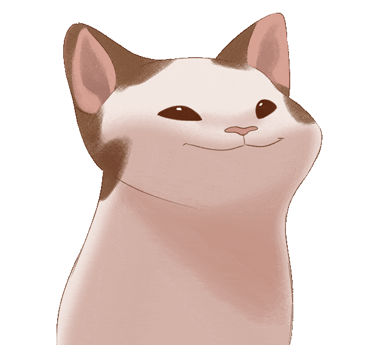

I'm very sorry to inform you that your screen size is not suitable for this feature
Please use a device that has a screen size wider than 800px, thank you
X

1. Explain the core game mechanic of the game.
The core game mechanics of Duet Cats have gameplay similar to the famous legendary game of the
past - Apple Catch. However, the game has been improved with interface changes, applying music
dubbing and music beats. Here is my explanation of the core game mechanics:
The game requires the player to hold down and drag the cat so it can eat ice
cream falling from above (this gameplay is similar to fruit-catching games
popular in the early 2000s on websites). “gamevui.com”, “game24h.com”, “Y8.com”,
etc). The player needs to control two cats in parallel so they can catch the ice
cream falling from above. The ice creams need to be caught perfectly to create
musical notes through cats's squeaks.
In the game players can choose their favorite song sung by adorable cats. The
game offers a variety of tracks that are unlocked through watching ads or
winning a level. Players can choose their favorite songs and try to get the most
stars (3 stars). In addition, the game will also provide coins after each round.
With the hold and drag mechanism, players can collect those coins.
With the collected coins, players can use them to exchange skins for cats. In
addition, gold coins can also be used to replace dropped food skins and buy
items in the cat's house. Some food and cat skins can be obtained through
watching ads.
2. Explain and compare how music is integrated with the gameplay of the game.
The way of integrating music into the gameplay of the game Duet Cats is similar to the previous
3 games in terms of mechanics by still paying attention to the lyrics and rhythm. Below is my
take on Friday Night Funkin''s approach and approach to integrating music into the game's
gameplay:
Duet Cats has methodically selected music and paid attention to users' tastes
and "remixed" them through the cats' melodies. These tracks are selected because
they bring familiarity or have attractive, fun melodies for players. However,
Duet Cats has a relatively low amount of “meower” music. To compensate, the
amount of music in the “instrumental” section is quite large.
During the game, the player needs to hold down and move 2 cats to catch food
falling from above. Besides catching food, players also need to pay attention to
catching stars dropped with food. If the player cannot catch the food, the
player will lose 1 life (usually there will only be 1 life, to get 2 more lives
the user will have to watch ads). Players can choose to watch the ad to continue
or skip it and accept defeat.
Duet Cats drop food from above to the beat of the music. The dropping of food
from above is synchronized with the rhythm of the music. Players need to hold
and move the cats to be able to eat all the food and help the cats meow in time
with the rhythm.
3. What is the motivation that keeps players playing & coming back in these games? Explain
how the game creates that motivation with its systems & design.
Duet Cats was the last game I played. The gameplay of holding and moving cats instead of
pressing and holding like previous games showed me clearly the difference and diversity in the
game presentation of a music game. Accompanying the use of the familiar meme image of the pop
cat made a big impression on me. The following is the motivation that the game creates for
players based on my personal opinion:
First motivation (click
me)
Second motivation (click
me)
4. Describe the style and aesthetic of the game. Explain how the game achieves that aesthetic
through its design, art, and audio.
As for style, the gameplay interface of Duet Cats chooses its own path with a cute and simple
interface. Duet Cats' user interface is designed to be simple, cute, and somewhat retro.
Regarding aesthetics, the colors used in Duet Cats are light and bright, helping to create a
cheerful and pleasant atmosphere. The details of cats and objects in the game are expressed
simply but clearly, creating images that are easy to see and attract the player's attention.
The music used in the game is remixed in a lighter and more mischievous way than the original
version. The lyrics in the game are replaced with adorable cat sounds, creating a more playful
and less serious atmosphere than the lyrics in the original version. Changing the melody and
lyrics in the game along with the lovely interface design helps further affirm the game's role
in helping players entertain rather than stress about scores and challenges in the game.
5. Propose briefly 1 critical point you want to improve.
Briefly: the only improvement in the game is probably the amount of music in
the game.
Details: Because this is a game that mainly focuses on entertainment and
relaxation, I will not mention antagonism like in previous times. Adding antagonism can even
destroy the inherently beautiful nature of the game. However, considering the number of songs
with lyrics in the game should probably be promoted. I understand that creating a lovely version
of a song is difficult. In particular, there must be careful selection and neutralization of
viral songs. Viral songs will often have a special melody such as strong, sad, etc. Transforming
those tunes into something as innocent, mischievous, and fun as Duet Cats would be a big
challenge. What brings players to a music game is harmonizing their emotions with the melody of
that song. And it would be even better if they could immerse themselves in their favorite song.
Creating melodies and adding songs can present a challenging wall, but once that wall is broken,
Duet Cats has the potential to shine even brighter than it is currently.

.png)